实验装置很简单：一根细玻璃管（内径 0.3 mm、外径 0.5 mm）竖直插在无水乙醇里，管里有一根钨针，针尖和管口平齐。氦气以每分钟 3 mL 的速度从管口冒出，形成气泡。管口上方 30 mm 处有一个金属环，环和针之间加 2.0 kV 直流电压。
不加电压时，气泡长到一定大小就脱离管口飘走（就像吸管吹泡泡）。加了电压，针尖附近的氦气被电离成等离子体（能看到针尖处的亮点），气泡突然变得很大，而且不会整个飘走：它的下半部分像被“拴”在管口，上半部分越长越高，中间变细，最后断开，只有上半个飘走。
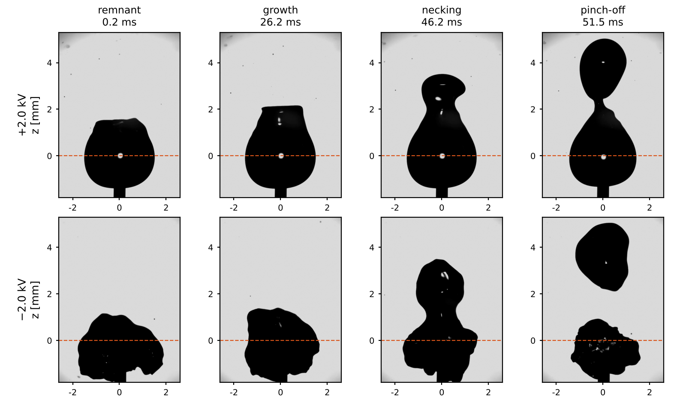
论文发现两种极性的差别主要在界面稳定性：负极性时打到界面上的主要是电子，界面抖得更厉害（论文 Fig. 4 的曲率波动约大 10 倍）。我们要在电脑里重现的，就是图 1 这个过程。
CFD（计算流体力学）的思路可以用“拍电影”来理解：
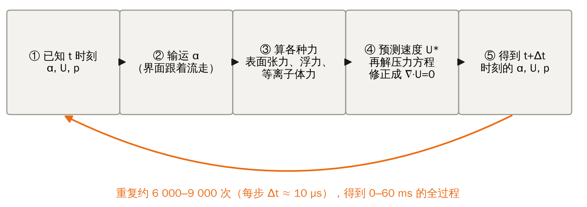
两种流体共用一套格子。为了知道每个格子里是什么，引入一个数 α（读作 alpha）：格子里乙醇占的体积比例。
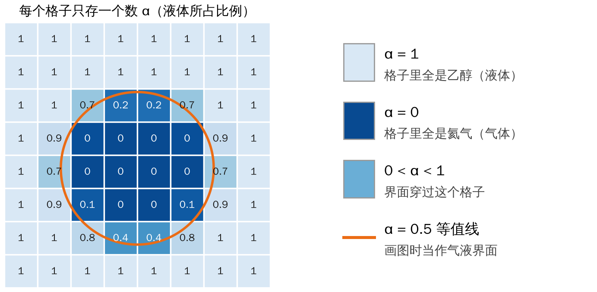
有了 α，任何格子里的密度和黏度都可以按比例混合出来（式 3）。气泡的形状就是 α = 0.5 的那条等值线：动图里看到的白色/深蓝色边界就是它。
α 本身会随流体流动而搬运，就像往水里滴的墨水会跟着水流走。这由第 4 章的相方程描述。
整个模拟只用了下面这几个方程。看起来复杂，但每一项都有很直观的意思。符号约定：U 是速度（矢量），p 是压力，ρ 是密度，μ 是黏度，g 是重力加速度，∇ 读作“梯度/散度”，可以理解为“在空间里的变化率”。
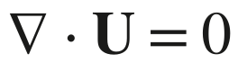
液体和气体在这里都当作不可压缩（体积不会被压小）。∇·U = 0 的意思是：任何一个格子，流进来的体积 = 流出去的体积。唯一的例外是管口下方的进气口，那里规定氦气以 0.707 m/s 流入（第 8 章）。
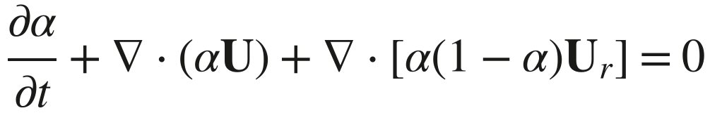
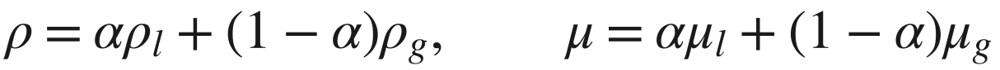
下标 l 表示液体（乙醇），g 表示气体（氦气）。乙醇密度是氦气的 4 870 倍：这么大的密度比是气泡问题难算的原因之一。
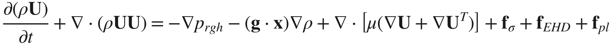
等号左边是“质量 × 加速度”，右边是所有的力。从左到右：
| 项 | 意思 | 在气泡问题里的作用 |
|---|---|---|
| ∂(ρU)/∂t + ∇·(ρUU) | 单位体积流体的“质量 × 加速度”。第二部分表示流体带着自己的动量一起流动。 | 惯性：气泡上浮、断开后的回弹 |
| −∇prgh | 压力差推着流体从高压流向低压。prgh = p − ρ g·x 是扣掉静水压后的压力，数值上更好算。 | 维持质量守恒 |
| −(g·x)∇ρ | 重力与浮力。只在密度变化的地方（即界面上）不为零：轻的气体被推着往上。 | 浮力：让气泡往上走 |
| ∇·[μ(∇U+∇UT)] | 黏性力：相邻流体层之间的“摩擦”。 | 阻尼振荡，影响颈缩速度 |
| fσ | 表面张力（第 5 章）。 | 让气泡变圆；决定颈缩、断开 |
| fEHD + fpl | 等离子体的等效作用（第 6 章），是我们自己加的。 | 把气泡拴在管口、拉长、抖动 |
液体内部的分子被四周分子均匀地拉着，合力为零；表面上的分子外面没有液体，只被往里拉。结果是液面像一张绷紧的膜，总想让自己的面积最小。这就是表面张力，用 σ 表示，单位 N/m。乙醇的 σ = 22.14 mN/m（论文给定），大约是水的三分之一。
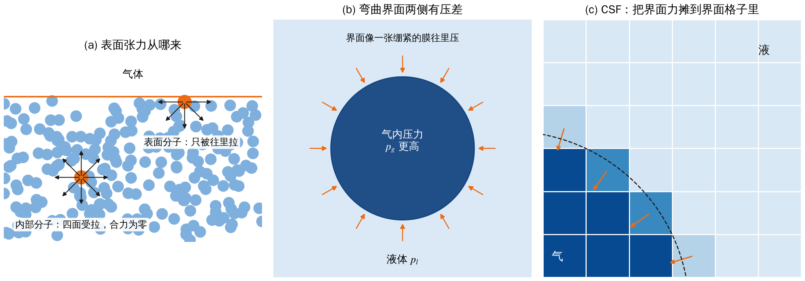
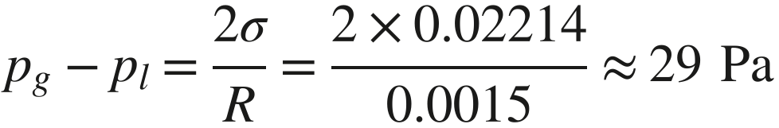
半径 R = 1.5 mm 的气泡，内部比外面高约 29 Pa。这个数很关键：我们后面加的等离子体界面力是 5–60 Pa，和它同一个量级。所以气泡最后在哪里变细、什么时候断开，是表面张力和等离子体力“拔河”的结果。
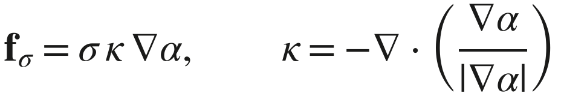
OpenFOAM 在计算时把表面张力和压力梯度放在格子的同一个面上计算（“平衡力”离散），这样静止的气泡不会因为数值误差自己乱动。我们新加的等离子体力也用同样的方式加进去。
在玻璃管壁上，界面与管壁的夹角规定为 45°（从乙醇一侧量）。这决定了气泡沿管外壁往下包多少。乙醇实际上很容易润湿玻璃，45° 是一个折中取值。
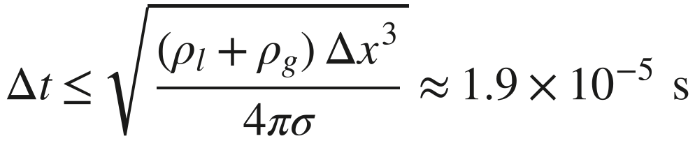
表面张力会在界面上激起很快的小波（毛细波）。时间步太大，这些波会被数值放大导致发散。50 µm 格子对应的上限约 19 µs；实际计算时由 Courant 数控制，平均步长 8.9–9.9 µs，在上限以内。
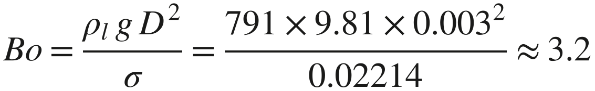
Bond 数 Bo 比较的是浮力和表面张力。直径 3 mm 的气泡 Bo ≈ 3.2 > 1，说明浮力占优。0 kV 对照算例证实了这一点：同样的 15 mm³ 气泡，不加等离子体力时，在 14.5–15 ms 内整个脱离管口。也就是说，实验里那个巨大的、拴在管口的气泡，单靠表面张力是拴不住的，必须有等离子体的作用。
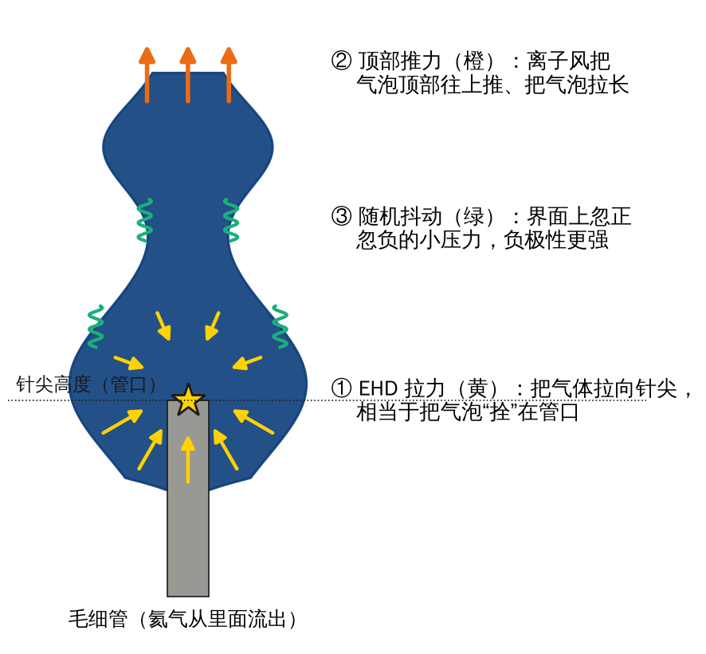
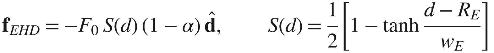
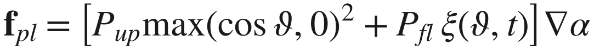
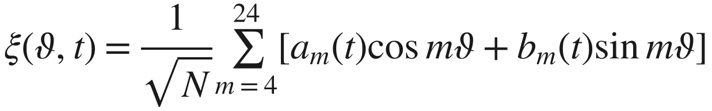
ξ 是一组波长不同（m = 4–24）的正弦波叠加，每个波的振幅 am、bm 随时间随机变化，变化的“记忆时间”约 0.3 ms。这样界面上就有一个忽正忽负、不断变化的小压力，模拟带电粒子撞击界面造成的扰动。
等离子体只存在于和针尖相连的那团气体里。程序每一步都从针尖附近 0.8 mm 内的气体格子出发，像“油漆桶填色”一样找出所有连通的气体格子，只对这些格子（再往外扩 2 层，覆盖界面）施加上面两个力。气泡断开后，飘走的那一半就只受浮力和表面张力。没有这一步时，飘走的气泡会被拉回来重新合并（第 10 章）。
OpenFOAM 是一个开源的 CFD 软件包，本质是一大套 C++ 程序。它为不同问题准备了不同的“求解器”，其中 interFoam 专门算两种不相溶流体（如气泡、液滴、溃坝），已经包含第 4 章的 (1)–(3) 式和动量方程里除等离子体以外的所有项。
我们做的事：
solver/plasmaInterFoam/：新增的文件是 createPlasmaForce.H（读参数、预先算好与时间无关的部分）和 plasmaForce.H（每步更新随机振幅、找连通气体、算力），另外在 UEqn.H、pEqn.H 里各加了一项 plasmaForcef。所有参数在算例的 constant/plasmaProperties 里，不用重新编译就能改。
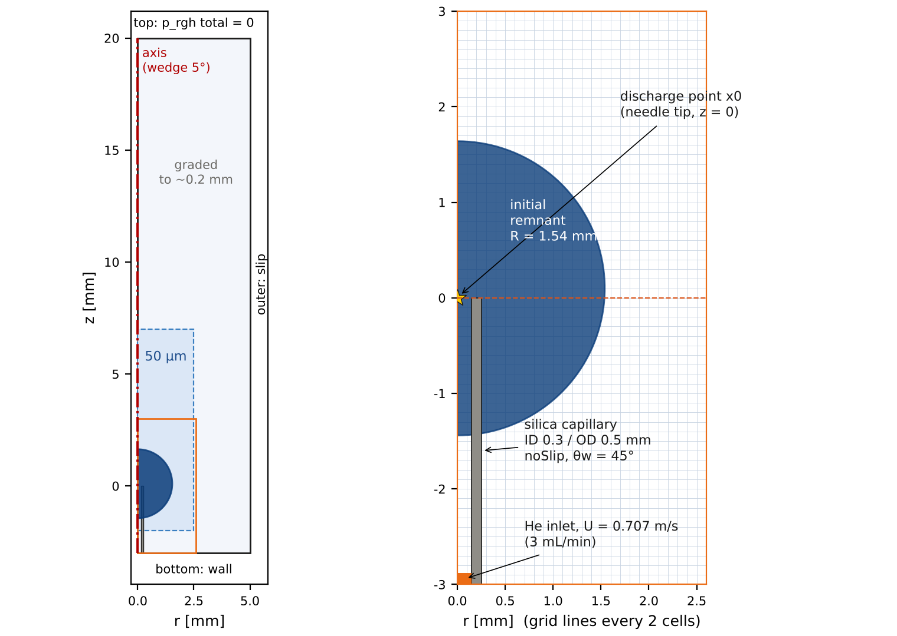
| 项目 | 设置 | 为什么 |
|---|---|---|
| 计算域 | r ≤ 5 mm，z 从 −3 到 20 mm，5° 楔形 | 与动图视野一致；轴对称 |
| 网格 | 20 722 格；管口附近 r ≤ 2.5 mm、z ≤ 7 mm 内均匀 50 µm，往外逐渐放大到约 0.2 mm | 管壁 0.1 mm 厚，至少要 2 格 |
| 乙醇 | ρl = 791 kg/m³，μl = 1.17 mPa·s，σ = 22.14 mN/m | 论文给定 |
| 氦气 | ρg = 0.1625 kg/m³，μg = 1.99×10−5 Pa·s | 25 °C、1 atm |
| 进气口 | 管内 r < 0.15 mm 的底面，氦气以 0.707 m/s 流入（见下式） | 3 mL/min |
| 管壁 | 无滑移（贴壁速度为 0），接触角 45° | 玻璃管 |
| 底面 | 壁面 | — |
| 外侧 r = 5 mm | 滑移（只挡住，不摩擦） | 离气泡足够远 |
| 顶面 z = 20 mm | 压力固定，液体可进出 | 让上浮的气泡离开 |
| 初始条件 | 球心 z = 0.1 mm、半径 1.54 mm 的氦气泡，其余是静止的乙醇 | 视频里上一次断开后留下的气泡（第 9 章） |
| 算多久 | 0–60 ms（0 kV 对照算到 80 ms），每 0.5 ms 存一次结果 | 覆盖一次完整的颈缩和断开 |
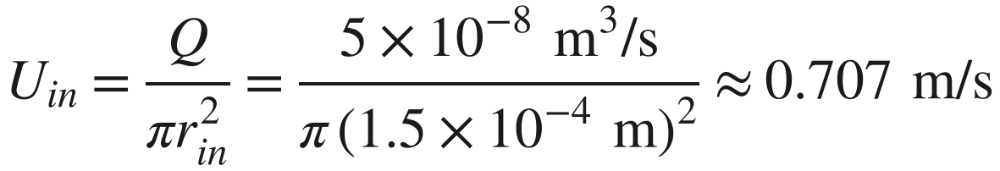
针本身只有 0.08 mm 粗，在 50 µm 的格子里只有不到一格，所以没有单独画出，只把针尖位置当作等离子体力的中心。
为了让模拟能和实验比，先要从视频里量出数字。做法是对每一帧做黑白分割（黑色 = 气泡），然后：
模型的几个参数（F0、RE、Pup、Pfl）不能从理论直接算出来，只能试算、和视频比、再调。下面是实际走过的路，每一步都用视频量出的数字（顶高、底深、宽度、颈缩、断开体积）来判断。
| # | 试了什么 | 看到什么 | 怎么改、学到什么 |
|---|---|---|---|
| 1 | 只加 EHD 拉力，F0 = 14.7 ρlg，RE = 1.7 mm；抖动 40 Pa（正）/ 500 Pa（负） | 正极性表面起皱；负极性气泡被撕成很多“手指” | 抖动强度太大，降到 5 Pa / 40 Pa |
| 2 | 同上，抖动减小 | 33 ms 内气泡顶部一直停在 1.6 mm，不长高 | 拉住的范围 RE 比气泡大，新进的气都被“装”在范围内。RE 改为 1.5 mm，初始体积改为视频的 15 mm³ |
| 3 | RE = 1.5 mm | 顶部在 2.3–3.3 mm 上下晃，80 ms 内不颈缩 | 只有拉力时，上部要攒到约 18 mm³ 才能挣脱，远大于实验。参考论文受力图，加入顶部推力 Pup |
| 4 | 加 Pup = 30–100 Pa | 顶部反而被压低 | 界面力的符号写反了（−P∇α 是往里压，+P∇α 才是往外推），改正 |
| 5 | 改正后 Pup = 60–100 Pa | 整个气泡被推离管口 | 拉力不够大，F0 提到 25 → 40 ρlg |
| 6 | F0 = 25 ρlg，Pup = 40 Pa | 第一次成功颈缩断开！但飘走的气泡又被拉回来合并 | 等离子体力也作用在了飘走的气泡上。加入“只对连通气体起作用”的开关（6.3 节） |
| 7 | 负极性抖动 25–40 Pa | 约 3 ms 起整个气泡被甩离管口 | 抖动松动了气泡在管子上的“根”，再被顶部推力推走。F0 提到 40 ρlg、Pup 60 Pa，抖动降到 8 Pa |
| ✓ | 最终：F0 = 40 ρlg，RE = 1.5 mm，Pup = 60 Pa，Pfl = 5 / 8 Pa | 两种极性都完成“残留→颈缩→断开→上浮” | 见第 11 章 |
每个试算约 15–30 分钟。最终每个算例 6 000–9 000 步，单核 16–27 分钟。
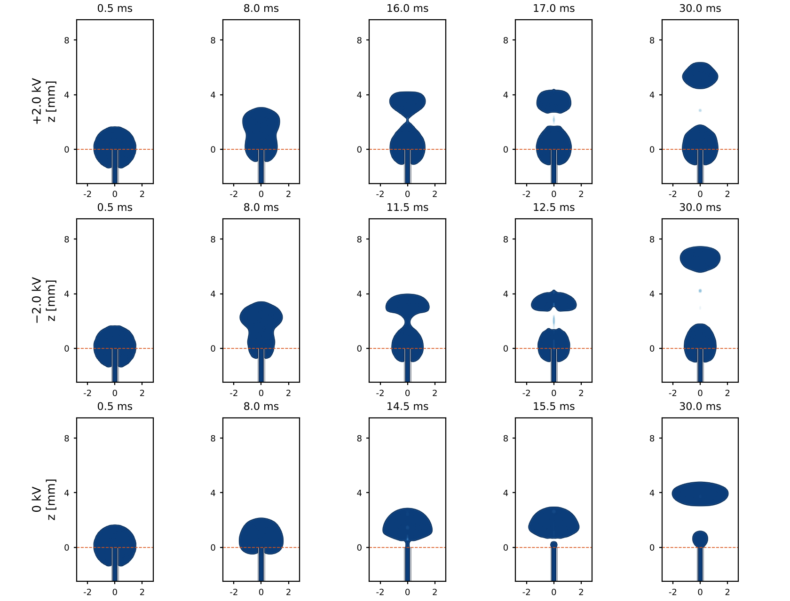
| 什么时候断开 | 飘走的气泡 | 留下的气泡 | |
|---|---|---|---|
| +2.0 kV 模拟 | 16.0–16.5 ms | 6.1 mm³（等效半径 1.13 mm） | 9.8 mm³ |
| −2.0 kV 模拟 | 11.5–12.0 ms | 8.4 mm³（等效半径 1.26 mm） | 7.2 mm³ |
| −2.0 kV 实验 | — | 7.7 mm³ | 9.2 mm³ |
| +2.0 kV 实验 | 约 52 ms | — | — |
| 0 kV 模拟 | 14.5–15 ms | 整个气泡 15.8 mm³ | 几乎没有 |
plasma_bubble_2p0kV.gif：三栏从左到右是 0 kV、+2.0 kV、−2.0 kV，每栏上方是该栏的时刻，右上角红字是总时间，0–60 ms，每帧 0.5 ms。| 名词 | 意思 |
|---|---|
| CFD | 计算流体力学：用计算机解流体方程。 |
| 网格 / 单元 | 把空间切成的小格子，本次 20 722 个。 |
| 时间步 Δt | 每次往前推进的时间，本次约 10 µs。 |
| Courant 数 | 一步内流体走过几个格子；要求 ≤ 0.4。 |
| VOF、α | 流体体积法；α 是格子里液体的体积比例。 |
| MULES | OpenFOAM 里保证 α 在 0–1 之间、界面不被抹糊的算法。 |
| PIMPLE | 先预测速度、再解压力修正速度的迭代算法。 |
| prgh | 扣掉静水压后的压力，方便计算。 |
| 表面张力 σ | 液面收缩的倾向，乙醇 22.14 mN/m。 |
| 曲率 κ | 界面弯曲的程度，半径越小越弯。 |
| CSF | 连续表面力模型：把界面上的表面张力变成界面格子里的体积力。 |
| Laplace 压差 | 弯曲界面两侧的压力差，2σ/R。 |
| 接触角 | 界面碰到固体壁时的夹角。 |
| Bond 数 | 浮力和表面张力之比，> 1 时浮力占优。 |
| 轴对称、楔形网格 | 只算一个绕轴的薄扇形，代表整圈。 |
| 边界条件 | 计算域边上规定的速度、压力等。 |
| EHD | 电流体动力学：电场对带电流体的作用力。 |
| 唯象模型 | 不追究微观机理、只用形式简单的等效项重现现象的模型。 |
| 标定 | 调整模型参数使结果与实验吻合。 |
| 颈缩 / 断开 | 气泡中部变细（neck），最后一分为二（pinch-off）。 |
| OpenFOAM / interFoam | 开源 CFD 软件 / 其中的两相流求解器。 |
| plasmaInterFoam | 本次在 interFoam 上加了等离子体等效力的自编求解器。 |